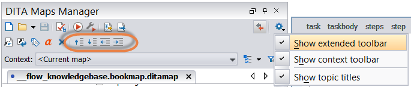

In the DITA Maps Manager, select the topic you want to move.
Move the topic:
Drag and drop the topic within your DITA Maps Manager.
Hold down the Alt key and use the keyboard arrows to move the topic.
In the extended DITA Maps Manager, use the node moving buttons to move the topic. If these are not available, press Settings on the DITA Maps Manager and select Show extended toolbar.

Right-click the topic in the DITA Maps Manager and go to Organize. Select how you want to rearrange the topic.
Move up and Move down to move the topic higher or lower (vertically) in the list. Promote and Demote to move the topic higher or lower (horizontally) in the hierarchy. This horizontal movement allows you to nest or de-nest topics.
Note: Avoid nesting topics more than five levels. Doing so might make it more difficult to navigate your DITA map and find the information you need. It can also make it difficult for output formats to render the many levels you have created.
 Settings on the DITA Maps Manager and select Show extended toolbar.
Settings on the DITA Maps Manager and select Show extended toolbar.